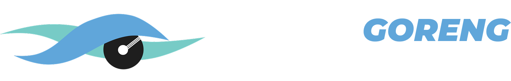

Fighting for the first place in IRIS CUP 2025, NasgorGoreng design an optimal autonomous line follower robot, equipped with panel control and telemetry system. We do our best to be the next IRIS 2025.